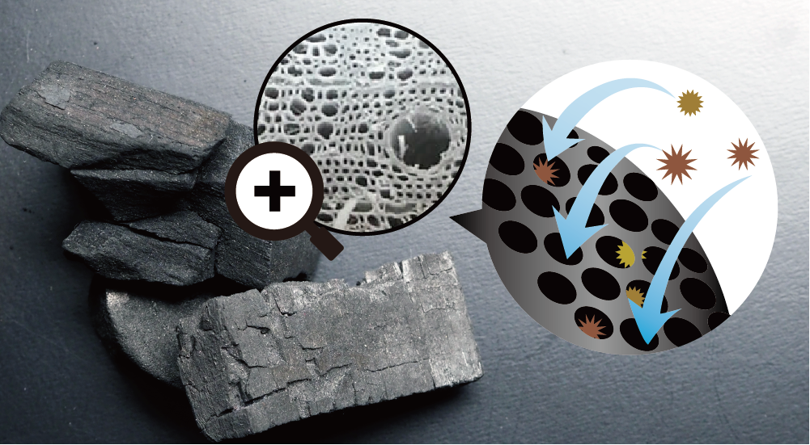

LIFE STYLE
食べる後に飲む女性続出中のサプリメントの効果とは？
私たちの体には知らず知らずのうちに化学調味料材や食品添加物など、余分な物が溜まり、体の代謝を滞らせているかもしれません。 痩せづらかったり、甘い物や油物を我慢せずに食べたい方に、食べた後にそれらを吸着して外に出す働きのある「炭」に注目したサプリメントが続々と発売されています。

機能性活性炭は、微細孔というスポンジのように無数に穴があいている部分に、余計な物をしっかりからめとり、必要な栄養素は吸収されない構造をもっています。

胃や腸を浄化しデトックス効果も期待できる炭は海外でも注目を集めるダイエット方法です。 サプリメントタイプ、粉末タイプ、ゼリータイプなど様々な種類が発売されています。 ライフスタイルに合わせ、予防として油物や甘いものを食べた後、習慣にできる物を探してみてはいかがでしょうか。